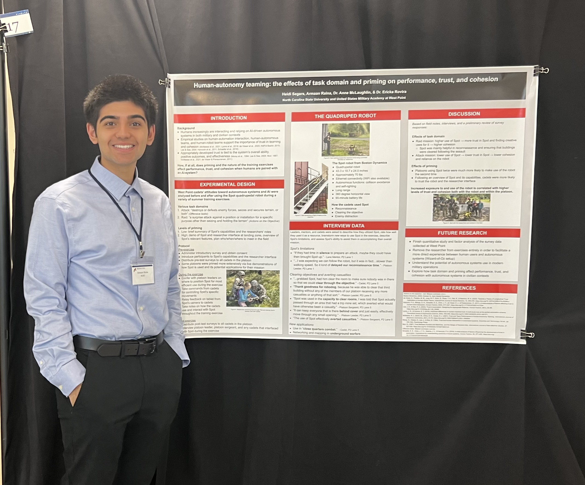

Overview
I worked in a human factors research lab where I assisted on projects focused on human-robot interaction, optimal learning conditions, and cognitive load. This experience served as my first interaction with research as an undergraduate student, here I ran my first R scripts, made my first git repos, and learned about research methods for the first time.
Accomplishments
- The lab completed a research task requiring paper surveys, in order to scan the results and save them online for analysis, another undergraduate student and I modified the OMRChecker repo alongside some manually configured JSON files to automate the process of moving the survey data online. Beyond this, I manually QAed the surveys before their entry into the software.
- For a project involving cognitive load during tasks, I made modifications in C# to Unity environments, swapping out different elements to simulate different experimental conditions and recorded demos for participants.
- Based on a project assessing human-robot anthropomorphism in military contexts, I presented findings on autonomy and trust in robotics at a local undergraduate symposium pictured below. This was my first time helping to assemble and present research.
